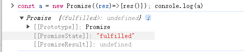
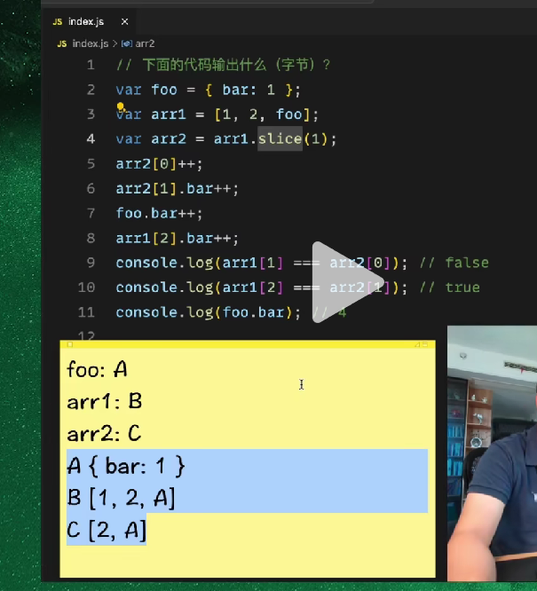

promise 分析技巧
前置准备
then 函数中 onfulfilled 回调函数的执行时机（进微队列的时机）
1.如果注册回调函数的时候 promise 对象的状态已经完成了，onfulfilled 直接进微队列
2.如果注册回调函数的时候 promise 对象的状态还是 pending,那就等 promise 调用 reslove()之后再进微队列
then 里面的回调函数如果不是函数，相等于是没有
Promise.resolve(1).then(2).then(Promise.resolve(3)).then(console.log);
//相等于
Promise.resolve(1).then(console.log);
1;
3.(特殊可以不学)如果 then 方法要吸收一个新的 promise 状态，他需要等待两个微队列的时机
注意 await 后面的代码（下一行的代码）其实在一个事件队列中
await 后面的函数还是会立即执行的
最外层的 await 要等里层的 await 先返回才会继续进行
async function m() {
console.log(0);
const n = await 1; //当m函数运行到await就其实已经结束了
console.log(n);
}
// function m() {
// return Promise.resolve(1).then((n) => {
// console.log(n);
// });
// }
console.log(m())
先执行0，然后运行到await,相当于是要进入一个微队列，m()函数的返回值是then方法这个promise对象的返回值
所以输出结果：
0
pending
1
注意
如果 promise 里面没有异步代码，那会直接返回 fulfilled
const a = new Promise((resolve) => {
resolve();
});
console.log(a);

如果用 promise 的静态方法 all,any,race 的任务数组的每一项如果不是 Promise 对象，则使用 Promise.resolve 转成 Promise 对象，静态方法无论里面代码是否异步，一开始的状态都是 pending
跟上面不一样
const a = Promise.all([1]);
console.log(a);
做题方式
做题的时候准备好两个队列，把要执行的函数依次排入
上面可以再来一行记录 Promise 的状态
执行栈：
宏队列：
微队列：
1.分析每一个 promise 对象的状态的数据
2.根据事件循环机制执行代码
例子 1
const promise = new Promise((resolve, reject) => {
console.log(1);
setTimeout(() => {
console.log(2);
resolve();
console.log(3);
});
});
promise.then(() => {
console.log(4);
});
console.log(5);
分析
promise 状态 返回值
执行栈
宏队列 setFn()
微队列
控制台
开始做题
1.先执行 promise 里面的执行函数，控制台输出 1
2.setTimeout 由于计时为 0 秒，于是立马完成，推入宏队列
3.promise 这个变量的值被赋为 promise 对象，状态是 pending（promise 这个变量会拿到后面的运算结果）
4.promise 对象注册成功之后的回调，但此时不会推入微队列中，因为他要等 promise 对象状态变为成功以后再执行（微队列中）
5.执行 log，控制台输出 5
6.这个时候执行栈已经执行完毕了，这个时候微队列里面没有东西，于是把宏队列里面的东西拿出来执行，控制台输出 2，把 promise 对象的状态改为 fufilled,同时把注册的回调函数(onfulfilled)推入微队列中，继续执行（必须要先把执行栈里面的东西执行完），控制台输出 5
7.执行栈执行完毕，这个时候把微队列里面的函数拿来执行
例子 2
var a;
var b = new Promise((resolve, reject) => {
console.log("promise1");
setTimeout(() => {
resolve();
}, 1000);
})
.then(() => {
console.log("promise2");
})
.then(() => {
console.log("promise3");
})
.then(() => {
console.log("promise4");
});
a = new Promise(async (resolve, reject) => {
console.log(a);
await b;
console.log(a);
console.log("after1");
await a;
resolve(true);
console.log("after2");
});
console.log("end");
分析
1.刚开始定义 a，a 的值为 undefined
2.定义 b，b 的值要等后面的函数执行完才会得到结果，刚开始也是 undefined
3.开始执行函数，输出 promise1
4.运行到一个 setTimeout 函数，等计时线程（1 秒后）推入宏队列中
5.调用三个 then 方法，但是由于前一个 promise 对象的状态还是挂起，所以 then 方法里面的函数不会执行
6.三个 then 函数运行完成以后 b 的值被赋值为一个 promise 对象，状态是挂起
7.开始给 a 赋值，同样 a 的值要等后面的 promise 执行完毕以后才能拿到结果，刚开始是 undefined，下一行代码等待 b,这个时候 promise 构造函数内部的函数已经执行完毕了，主线程不会等，所以这个 a 的值变成了 promise 对象，状态是挂起
8.输出 end
promise1，undefined，end，promise2，promise3，promise4,promise
值和引用分析技巧
